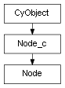

class cymel.core.cyobjects.node.Node¶

- class cymel.core.cyobjects.node.Node(*args, **kwargs)¶
Bases:
Node_cnode Node type wrapper class.
Supports node generation when creating a class instance without fixed arguments.
Methods:
addAttr([longName, type, subType, ...])Add attributes.
aliases()Get a list of attributes that have aliases defined.
assignUUID(val[, py])Assign a UUID.
delete()Delete a node.
Aliases for
aliases.listAttr(**kwargs)Alternative name for
plugs.lock([val])Alternative name for
setLocked.Get namespace.
plugs(**kwargs)Get a list of plugs that match the specified criteria.
referenceNode()If the node is a reference, get the reference node that manages it.
rename(name[, ignoreShape])Rename.
setLocked([val])lock or unlock.
setNamespace(ns[, ignoreShape])Set namespace.
unlock()Unlock.
uuid([new, py])Get the UUID.
Method Details:
- addAttr(longName='', type=None, subType=None, channelBox=False, childNames=None, childShortNames=None, childSuffixes=None, proxy=None, getPlug=False, **kwargs)¶
Add attributes.
A wrapper that makes the addAttr command easier to use.
Free yourself from the hassle of using -at and -dt when specifying type names.
Automatic generation of compound children (especially numeric compounds such as double3).
Simplified proxy specification.
Improved specification of default value, maximum value, and minimum value.
Default values can also be specified for the -dt type.
The matrix type can be specified with either
MatrixorTransformation.Numeric compounds can specify child values in
listformat.As per the behavior of the addAttr command, specify it in internal units (for example, radians for angles).
All options of the addAttr command are also available.
- Parameters:
longName|ln (str) – Long name of the attribute. At a minimum, you must specify either the long name or the short name.
type (str) – Attribute type name. If omitted, it will be double. You can specify the attributeType(at) type and dataType(dt) type without worrying about the difference. Some types have the same type name, but in that case the more general one is used (for example, matrix becomes dt, double3 becomes at). You can specify which type it is by adding the
at:ordt:prefix to the type name. By the way,Plug.typereturns this format if there are two versions of the same type name. You can also specify this using the native attributeType(at) or dataType(dt) instead of using this option. If proxy is specified, this option has no effect and will force the same type. For numeric compound types such as double3, child attributes are also automatically generated. The type and name of the child are automatically determined, but they can also be specified using subType, childNames, childShortNames, and childSuffixes. Even in the case of a general compound type (compound), children can be automatically generated by specifying either childNames, childShortNames, or childSuffixes only if the subType (default is double) is common.subType (str) – Specifies the common child type when compound children are automatically generated. Only attributeType(at) type can be specified. The main purpose of this option is to specify the type name of the child of a numeric compound such as double3, but in that case, it only needs to be specified if you want it to be an attribute with units such as doubleLinear or doubleAngle.
channelBox|cb (bool) – Specify the channelBox flag.
childNames (sequence) – A list specifying the long names of the compound’s child attributes. If omitted, it will be automatically determined from childSuffixes.
childShortNames (sequence) – A list specifying the short names of the compound’s child attributes. If omitted, it will be automatically determined from childSuffixes.
childSuffixes (sequence) – A suffix list for long names to automatically name compound child attributes according to their parent names. It is lowercase for short names. If omitted, it will be
XYZWorRGBAdepending on whether usedAsColor is set.proxy|pxy – Specify the master attribute when adding a proxy attribute. If this is specified, the usedAsProxy(uac) option is automatically specified and does not need to be specified.
kwargs – Other options for the addAttr command can be specified.
- Return type:
None or
Plug
- aliases()¶
Get a list of attributes that have aliases defined.
You will get a list of alias and
Plugpairs.- Return type:
- assignUUID(val, py=False)¶
Assign a UUID.
- Parameters:
val (
UUID) – Specify the UUID to assign. If py=True, you can also delete it by specifying None.py (bool) – UUIDs that are generated using Python functionality rather than Maya’s standard functionality are stored in an attribute named uuid. For versions below 2016, it is always treated as True. In 2016 and later, it can be used to avoid the problem where the UUID changes every time the scene is opened if a file created before that is referenced.
- delete()¶
Delete a node.
- plugs(**kwargs)¶
Get a list of plugs that match the specified criteria.
A simple wrapper around the listAttr command, which returns all attributes of a node without any optional conditions.
However, multi-element cannot be obtained unless m=True is specified. Also, in the case of the worldSpace attribute, you will not get the element even if you specify m=True (because in the case of worldSpace, it is better not to specify the index).
- Return type:
- referenceNode()¶
If the node is a reference, get the reference node that manages it.
- Return type:
Referenceor None
- rename(name, ignoreShape=False)¶
Rename.
- setNamespace(ns, ignoreShape=False)¶
Set namespace.
- unlock()¶
Unlock.
- uuid(new=False, py=False)¶
Get the UUID.
- Parameters:
new (bool) – Discard the existing ID and assign a new one.
py (bool) – UUIDs that are generated using Python functionality rather than Maya’s standard functionality are stored in an attribute named uuid. For versions below 2016, it is always treated as True. In 2016 and later, it can be used to avoid the problem where the UUID changes every time the scene is opened if a file created before that is referenced.
- Return type:
UUID
Note
Use
assignUUIDto assign a specified UUID, andCyObject.byUUIDto obtain a node from the UUID.